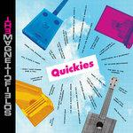

Music Reviews
-

Perfume Genius Set My Heart on Fire Immediately
Mike Hadreas' incredible fifth album is his most physical, powerful, and jaw-droppingly crafted record yet. [Believe the Hype]
Matthew Smith reviews... -

Jason Isbell and the 400 Unit Reunions
From tight rockers to disappointed country tunes, Jason Isbell tackles his demons head-on on his seventh studio album.
Ethan Gordon reviews... -

The Magnetic Fields Quickies
Stephin Merritt and his bandmates' latest gimmick is a collection of brisk, 28-song vignettes that are goofy and heartfelt, chronicling stories about people who struggle to find love or connect with others in exciting and meaningful ways.
Juan Edgardo Rodríguez reviews... -

Charli XCX how i'm feeling now
Pop's very own Chris Traeger showcases her inability to sit still on how i'm feeling now, an album that didn't even exist as an idea before the world went into lockdown.
Joe Rivers' work-rate looks a little poor in comparison... -

The Dears Lovers Rock
The Montreal rock band's eighth LP seems like it stumbles into place, and not once does it produce any catchy or memorable moments.
Ethan Gordon reviews... -

Hayley Williams Petals for Armor
With the repeated motif of flowers, the Paramore singer's debut solo album turns a theme that you’d expect to be trite into something genuine and moving.
Ethan Gordon reviews... -
Dua Lipa Future Nostalgia
The pop singer-songwriter's latest is an album of dualities: familiar pop songs that are entirely new, polished to a sheen but full of raw emotion, predictable but clever.
Gabbie Nirenburg reviews... -
I Break Horses Warnings
The Swedish duo find new ways to add more personality to their sweeping soundscapes on their third album.
Juan Edgardo Rodríguez reviews... -

Pure X Pure X
The Austin four-piece's fourth album, and first in six years, feels like a natural cleanse in name and spirit, allowing them to come back to each other when the timing felt right.
Juan Edgardo Rodríguez reviews... -

Diet Cig Do You Wonder About Me?
Do You Wonder About Me? is the duo’s second album of emotional contradictions, hushed harmonies, and sharply delicate guitar work.
Ethan Gordon reviews...